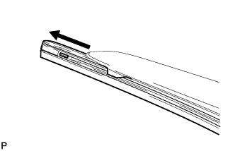

РЕЗИНОВЫЙ СКРЕБОК ПЕРЕДНЕГО СТЕКЛООЧИСТИТЕЛЯ > ЗАМЕНА |
| 1. СНИМИТЕ ЩЕТКУ ПЕРЕДНЕГО СТЕКЛООЧИСТИТЕЛЯ |
 |
Откройте держатель щетки переднего стеклоочистителя.
| *1 | Щетка переднего стеклоочистителя |
| *2 | Держатель щетки переднего стеклоочистителя |
| *3 | Рычаг переднего стеклоочистителя |
Снимите щетку переднего стеклоочистителя с рычага переднего стеклоочистителя, как показано на рисунке.
| 2. СНИМИТЕ РЕЗИНОВЫЙ СКРЕБОК СТЕКЛООЧИСТИТЕЛЯ |
|  |
Снимите резиновый скребок переднего стеклоочистителя с опорными пластинами со щетки переднего стеклоочистителя.
 |
Снимите 2 опорные пластины с резинового скребка стеклоочистителя.
| 3. УСТАНОВИТЕ РЕЗИНОВЫЙ СКРЕБОК СТЕКЛООЧИСТИТЕЛЯ |
 |
Установите 2 опорные пластины на резиновый скребок стеклоочистителя.
 |
Установите резиновый скребок на щетку переднего стеклоочистителя, как показано на рисунке.
| 4. УСТАНОВИТЕ ЩЕТКУ ПЕРЕДНЕГО СТЕКЛООЧИСТИТЕЛЯ |
 |
Установите щетку переднего стеклоочистителя, как показано на рисунке.
| *1 | Держатель щетки переднего стеклоочистителя |